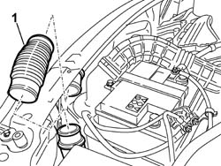
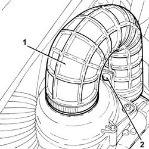
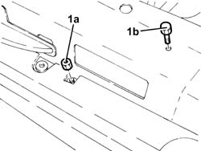
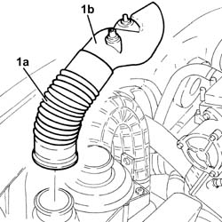
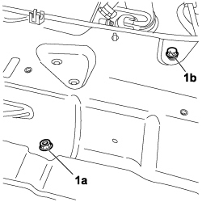

1048A21 filter input sleeve - r r
- Path
- Procedures > 10 ENGINE > 1048 ENGINE AIR SUPPLY CIRCUIT > 1048A VACUUM AIR CIRCUIT > 1048A21 filter input sleeve - r r
- Kind
- repair procedure (removal / refitting; the operation number is the code)
- Applies to
- engines: 1.6 16v, 1.9 JTD 8V; all production periods
- Interactive page
- https://sloeber94.github.io/elrnDB-fDbl/en/#/2584354
Applies to: engines: 1.6 16v; all production periods
 Removing
Removing
 Refitting
RefittingDisconnect the negative battery terminal.
1. Disconnect the air intake sleeve press-fitted between the air filter and air intake.

Applies to: engines: 1.6 16v; all production periods
Refitting
RemovingPress-fit the air intake sleeve between the air filter and air intake.
Connect the negative battery terminal.
Applies to: engines: 1.9 JTD 8V; all production periods
Removing
RefittingProceed with the removal
Proceed with the removal
Op. 5530B52 BATTERY SUPPORT/DRIP TRAY - R.R..
1. Loosen the band and disconnect the turbocharger air inlet pipe from the air filter cover.
2. Release the pin of the air intake pipe to the turbocharger from the fastening on the air filter cover.

Applies to: engines: 1.9 JTD 8V; all production periods
1. Unscrew nut (1a) and bolt (1b) securing the air intake for the air filter.

Applies to: engines: 1.9 JTD 8V; all production periods
1. Disconnect and remove the air intake sleeve from the intake to filter (1a) complete with cold air intake for air filter (1b) and separate at the bench.

Applies to: engines: 1.9 JTD 8V; all production periods
Refitting
RemovingConnect the air intake sleeve from intake to filter to the cold air intake for the air filter.
Refit the air intake sleeve from the intake to filter complete with cold air intake for air filter.
Unscrew nut and bolt securing the air intake for the air filter.
Connect the turbocharger air inlet pipe to the air filter cover and tighten the band.
Secure the pin of the air intake pipe to the turbocharger to the fastening on the air filter cover.
Proceed with the refitting
Op. 5530B52 BATTERY SUPPORT/DRIP TRAY - R.R..
Proceed with the refitting
Applies to: engines: 1.9 JTD 8V; production: da 12/03; only with equipment: MY 2005
Removing
RefittingProceed with the removal
Proceed with the removal
Op. 5530B52 BATTERY SUPPORT/DRIP TRAY - R.R.
Op. 7055B08 GRILLE (ONE) ON FRONT BUMPER - R.R
1. Loosen the band and disconnect the turbocharger air inlet pipe from the air filter cover.
2. Release the pin of the air intake pipe to the turbocharger from the fastening on the air filter cover.
Applies to: engines: 1.9 JTD 8V; production: da 12/03; only with equipment: MY 2005
1. Unscrew nut (1a) and bolt (1b) securing the air intake for the air filter.

Applies to: engines: 1.9 JTD 8V; production: da 12/03; only with equipment: MY 2005
1. Disconnect and remove the air intake sleeve from the intake to filter (1a) complete with cold air intake for air filter (1b) and separate at the bench.
Applies to: engines: 1.9 JTD 8V; production: da 12/03; only with equipment: MY 2005
Refitting
RemovingConnect the air intake sleeve from intake to filter to the cold air intake for the air filter.
Refit the air intake sleeve from the intake to filter complete with cold air intake for air filter.
Unscrew nut and bolt securing the air intake for the air filter.
Connect the turbocharger air inlet pipe to the air filter cover and tighten the band.
Secure the pin of the air intake pipe to the turbocharger to the fastening on the air filter cover.
Proceed with the refitting
Op. 7055B08 GRILLE (ONE) ON FRONT BUMPER - R.R
Op. 5530B52 BATTERY SUPPORT/DRIP TRAY - R.R.
Proceed with the refitting
Topics linked from this page (3)
- 5530B10 battery - r+r
- 5530B52 Battery DRIP TRAY/SUPPORT - R.R.
- 7055B08 GRILLE (ONE) ON FRONT BUMPER - R.R